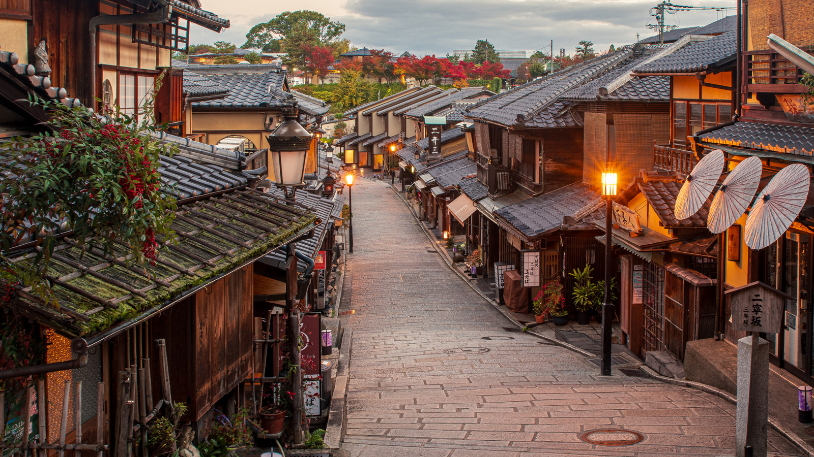
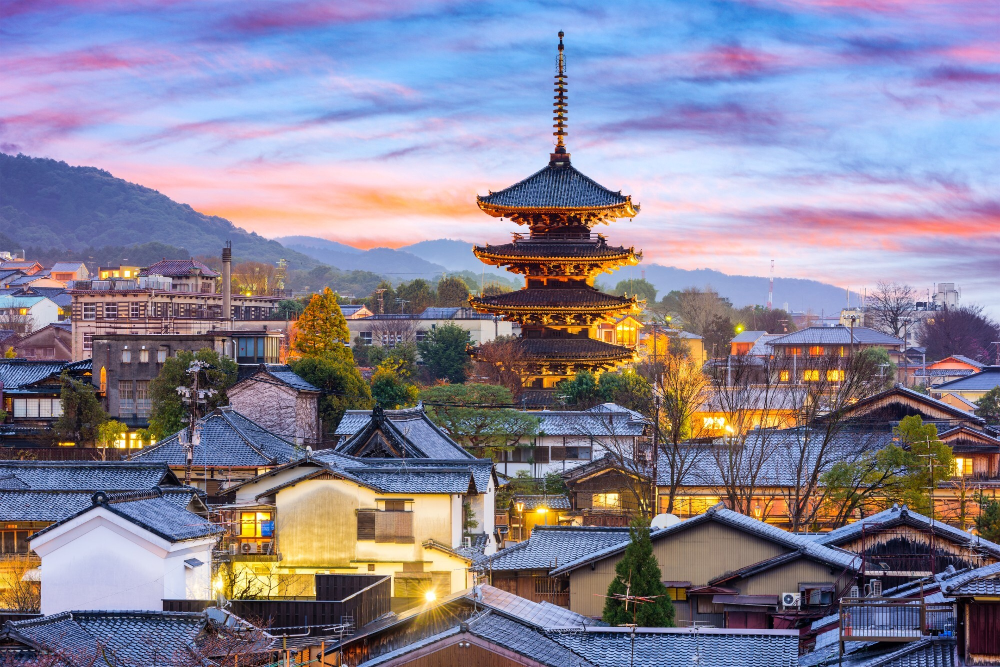

קיוטו, יפן |
|
|
קיוטו היא העיר שבה יפן המסורתית עדיין חיה ונושמת. זו עיר מלאה בקסם שעוצר את הזמן מלכת. עם אלפי מקדשים עתיקים, גני זן שלווים שמזמינים למדיטציה, ויער הבמבוק העצום של ארשיאמה. הליכה בסמטאות העץ של רובע גיון לעת ערב מרגישה כמו מסע בזמן לתקופת הסמוראים. |
  |
חזרה לדף הבית |
|